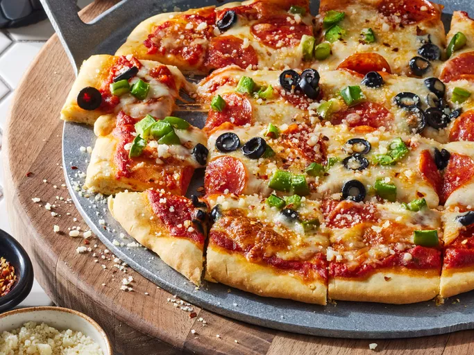

PIZZA

~ Pizza?? ~
A tantalizing medley of flavors atop a crisp, golden crust, invoking a symphony of culinary delight with every savory slice.
~ Ingredients ~
- Dough of Dreams: A pillowy canvas, handcrafted with flour, water, yeast, and a touch of magic, ready to rise to golden perfection.
- Sauce of Simplicity: Tomatoes, kissed by the sun, blended into a velvety sauce with garlic, olive oil, and a pinch of basil, infusing each bite with Mediterranean bliss.
- Cheese of Champions: Mozzarella, the melty hero, stretches gloriously over the pie, mingling with Parmesan and provolone to create a gooey, cheesy paradise.
- Meats of Majesty: Pepperoni, sausage, and savory ham, sizzling and tantalizing the taste buds with each flavorful bite.
- Garden Goodness: Fresh veggies, a riot of colors and textures - bell peppers, onions, mushrooms, and olives - adding a burst of freshness and crunch to every slice.
- Herbs of Harmony: Fragrant basil, oregano, and thyme, sprinkled atop the pizza like confetti, enhancing each bite with a symphony of aromas and flavors.
- Spices of Surprise: Crushed red pepper flakes, garlic powder, and a dash of sea salt, lending a kick of heat and depth to the flavor profile, ensuring every bite is an adventure.
~ I want to make it ~
- Summon the Dough of Dreams: Combine flour, water, yeast, and a pinch of love, kneading until smooth. Let it rise, like a phoenix from the oven, into a pillowy canvas of culinary magic.
- Craft the Sauce of Simplicity: Crush tomatoes with garlic, olive oil, and basil, simmering until fragrant. Spread it generously over the dough, like a crimson blanket of Mediterranean dreams.
- Adorn with Cheese of Champions: Shower the sauce with a flurry of mozzarella, Parmesan, and provolone, watching as they melt together into a gooey, cheesy symphony.
- Layer with Meats of Majesty: Crown the pizza with pepperoni, sausage, and ham, arranging them like noble warriors on a savory battlefield.
- Garnish with Garden Goodness: Scatter a rainbow of veggies - bell peppers, onions, mushrooms, and olives - over the pizza, adding freshness and crunch to every bite.
- Sprinkle with Herbs of Harmony: Shower the pizza with fragrant basil, oregano, and thyme, like a sprinkle of fairy dust, infusing each slice with aromatic bliss.
- Season with Spices of Surprise: Dust the pizza with crushed red pepper flakes, garlic powder, and sea salt, adding a tantalizing kick of heat and depth to the flavor profile.
- Bake to Golden Perfection: Slide the pizza into a blazing hot oven, watching with bated breath as it transforms into a bubbling masterpiece, its crust turning golden and crisp.
- Slice and Serve with Pride: With a deft hand, slice the pizza into wedges of pure bliss, each one a testament to your culinary prowess and a passport to pizza paradise.
Hmm that's it